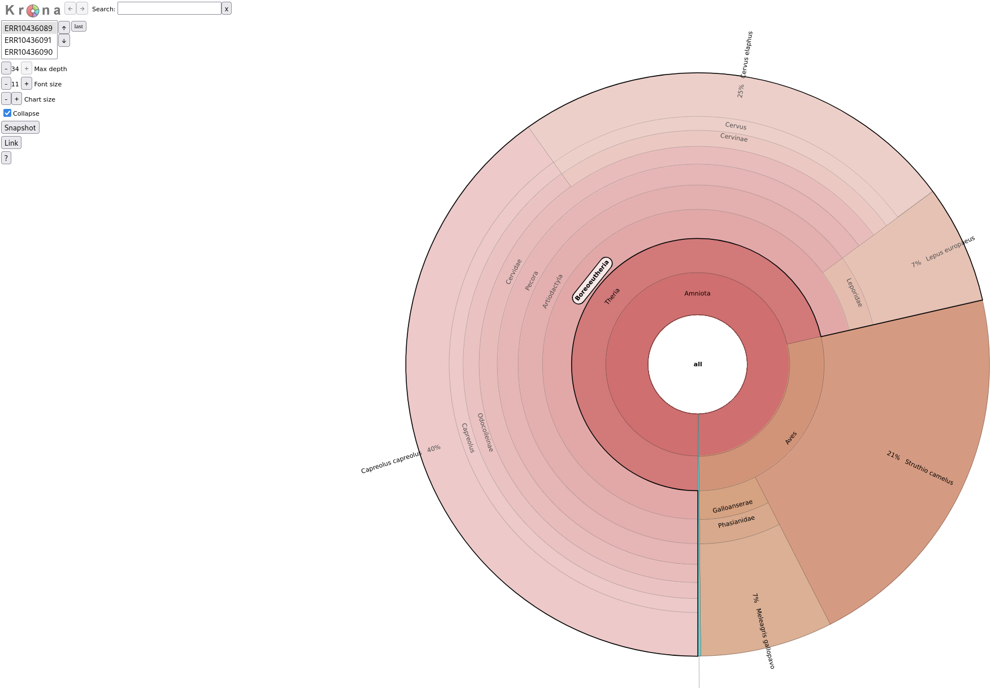
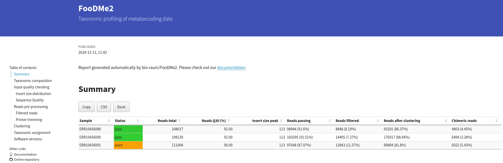

Outputs
Reports
name_of_pipeline_run.xlsx: A table with accumulated results - one row per sample per taxon:
| Sample | Taxon | Percentage | Reads | Cluster IDs |
|---|---|---|---|---|
| SampleA | Sus scrofa | 75.0 | 34545 | ASV_1[1.0] |
| SampleA | Bos taurus | 25.0 | 11515 | ASV_2[0.9] |
The Cluster IDs list one or several ASVs that yielded this taxon assignment, including the fraction of high-scoring database hits that support this call.
This is further detailed on the second work sheet:
| Sample | Cluster ID | Size | Taxon | Ranks | Taxid | Support[%] | Consensus |
|---|---|---|---|---|---|---|---|
| SampleA | ASV_1 | 34545 | Sus scrofa | species | 9823 | 100 | TRUE |
| SampleA | ASV_2 | 11515 | Bos taurus | species | 9913 | 90 | TRUE |
Of note is the column Consensus, which shows wether this call was in fact chosen as the consensus call for this ASV. Some ASVs may have multiple possible taxonomic assignments, with differing percentages. Discarded calls
are listed with a Consensus of FALSE.
name_of_pipeline_run_krona.html: A multi-sample Krona report to visualize taxonomic composition of samples.

The Krona report displays the taxonomic composition of a given as a circular plot, divided into levels of taxonomy.
name_of_pipeline_run.html: A graphical and interactive report of various QC steps and results

The summary report contains a variety of information about QC measures as well as the final results. Some of the key metrics are shown at the top, in the section labelled Summary. The status column aims to highlight the overall quality of a given sample, although users are advised to develop their own relevant cutoff metrics for the various processing stages, such as a minimum number of reads required after clustering for a sample to be considered for analysis, or the maximum amount of chimeric reads that are tolerated for a particular application.
Per-sample outputs
Sample-level reports can be found in the folder results/samples/sample_id.
When using Vsearch for OTU clustering
vsearch/sample_id.usearch_global.tsv: the number of reads mapping against each respective OTU, per samplevsearch/sample_id.precluster.fasta: the final set of OTUs in FASTA format
When using DADA2 for OTU/ASV clustering
DADA2/sample_id_ASVs.fasta: the clustered sequences (OTU/ASV)
This folder also contains a number of additional metrics and outputs, including graphical summaries of the error profiles and intermediary sequences tables that can be used to debug sample-specific issues.
blast/sample_id.filtered.json: JSON listing of all BLAST hitsblast/sample_id.consensus.json: JSON listing of consensus taxa assigned to each sequence cluster
This folder contains some of the raw sample-level outputs.
report/sample_id.composition.tsv: the taxonomic composition of this sample in TSV format.report/sample_id.composition.json: the taxonomic composition of this sample in JSON format.report/sample_id.blast_stats.tsv: Details of the blast matches against each respective OTU.report/sample_id.summary.json: A JSON summary of the results and QC for this sample
The file sample_id.summary.json contains the final results and forms the basis for the HTML report. If you wish to roll your own report or feed results automatically into a e.g. database, this is where you should start.
Pipeline run metrics
This folder contains the pipeline run metrics
params_TIMESTAMP.json: A summary of all pipeline parameters in JSON Format (with timestamp of pipeline execution)pipeline_dag.svg: the workflow graph (only available if GraphViz is installed)pipeline_report.html: the (graphical) summary of all completed tasks and their resource usagepipeline_report.txt: a short summary of this analysis run in text formatpipeline_timeline.htm: chronological report of compute tasks and their durationpipeline_trace.txt: Detailed trace log of all processes and their various metrics